The definitive 100% feature-complete engineering ecosystem for medical telemetry and hardware validation.
A high-fidelity interface designed for clinical observers and medical validation specialists.
Precise mapping of SpO2, Heart Rate, and Status flags to virtual instrumentation.
Direct manipulation of physiological parameters via touch-optimized controls.
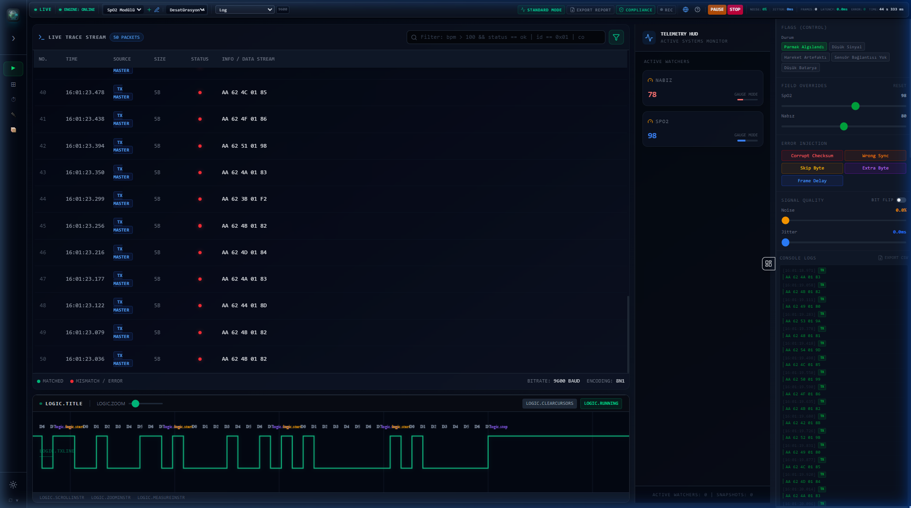
Full immersive ICU environment where every virtual device is powered by the live serial data stream.
Visual verification of device alarm states and display consistency.
Navigation through 3D twins of patient monitors, ventilators, and pumps.
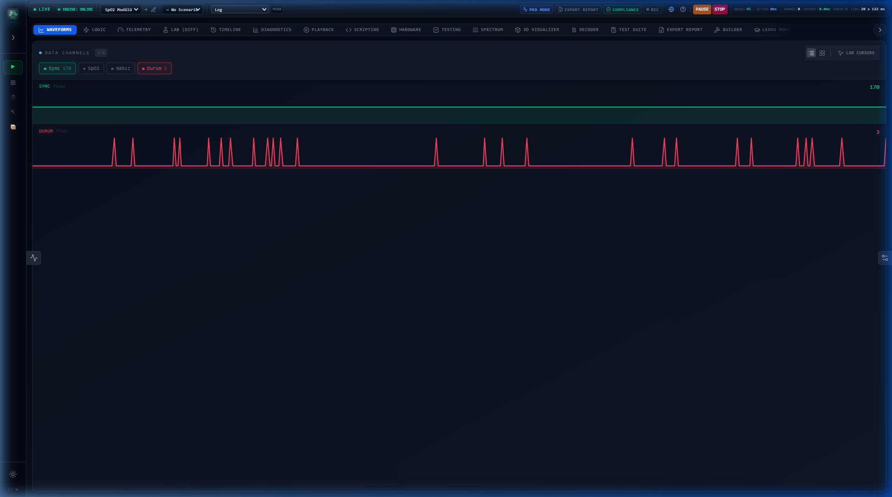
Microsecond-accurate bit-level analysis of the physical transmission layer.
Detect jitter and baud rate drift at the nanosecond scale.
Automated breakdown of Start, Data, Parity, and Stop bit transitions.
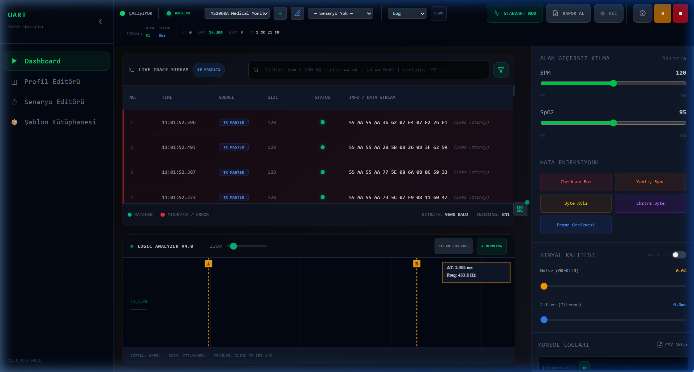
The definitive tool for protocol reverse engineering and bit-mapping.
Instantly identify exactly which bits changed between two packet frames.
Capture and compare real-time frames against a golden reference model.
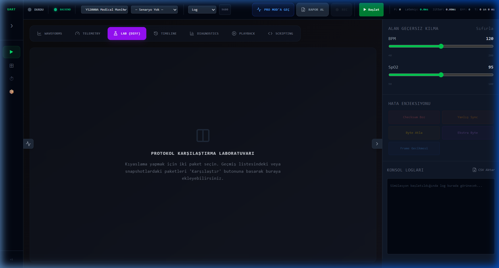
Advanced statistical analysis of communication stability and timing distribution.
Visualizing the variance in packet arrival times to ensure deterministic behavior.
Real-time calculation of success rates and error type breakdowns.
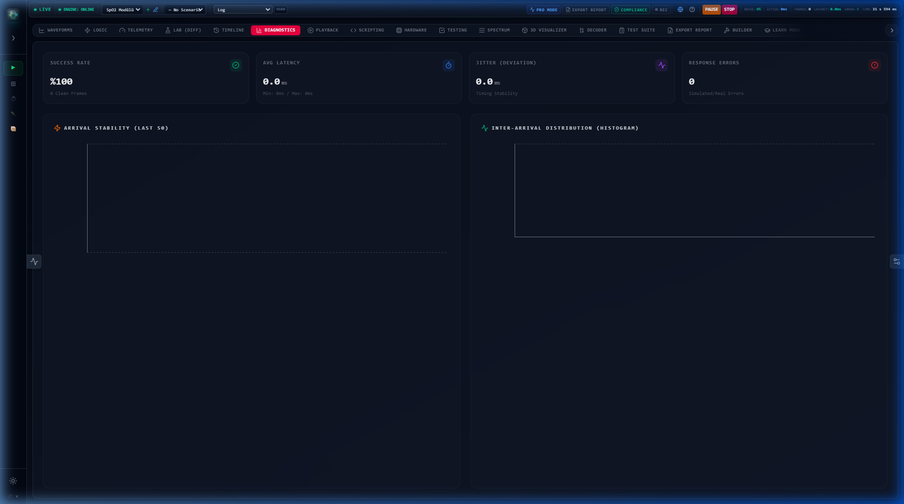
FFT-based frequency analysis of simulated physiological and digital signals.
Detect aliasing and unwanted noise components in your data stream.
Verify the integrity of filtered ECG and Resp waveforms in the frequency domain.
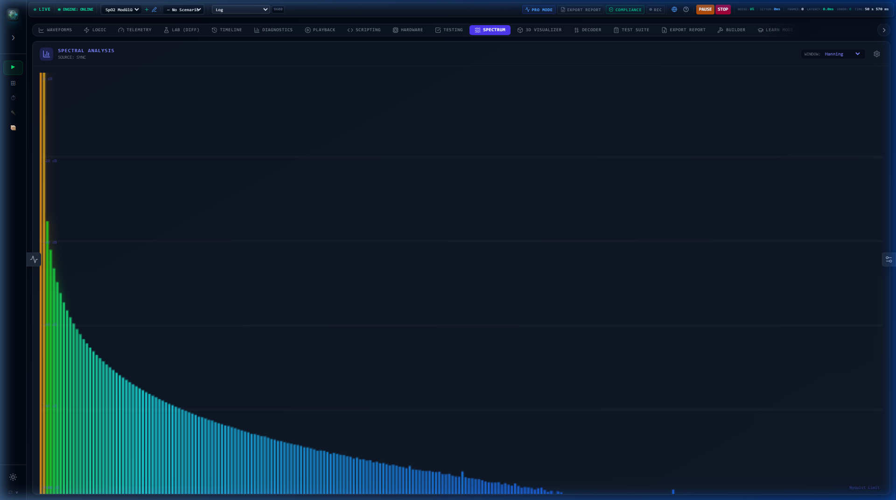
Automated unit testing of hardware responses and protocol handshakes.
Define pass/fail criteria for field values, checksums, and frame rates.
Execute entire suites of tests to ensure hardware firmware updates don't break compatibility.
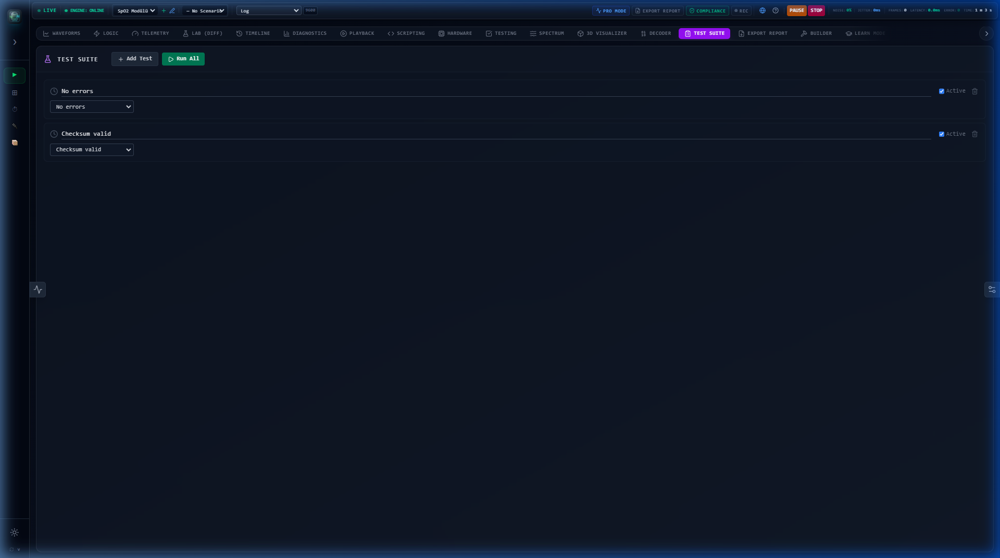
One-click generation of professional PDF reports for ISO 13485 and FDA compliance.
Detailed mapping of every packet failure during the validation session.
Fully formatted documentation with session stats and engineer signatures.
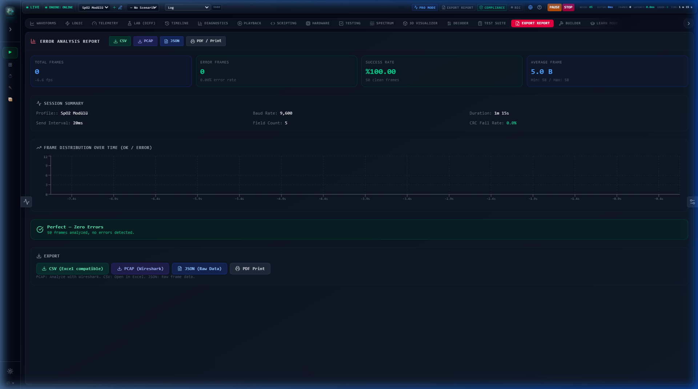
Bespoke signal drafting using mathematical formulas or freehand precision drawing.
Input complex math expressions to generate synthetic physiological signals.
Direct injection of EKG, PPG, and Resp presets into the live data stream.
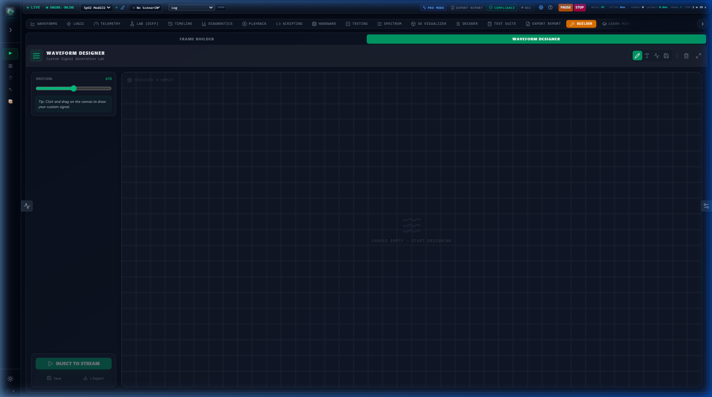
Rapid protocol definition through an advanced UI or C-Struct code importing.
Import existing embedded C code to auto-generate UART frame profiles.
Native support for XOR, Sum-Mod-256, and complex CRC-16 Modbus algorithms.
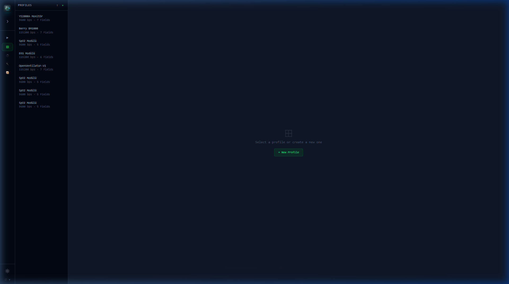
Automate complex clinical events like desaturation, bradycardia, or sensor detachment.
Sequence multiple actions (Set, Ramp, Error) with millisecond precision.
Pre-configured clinical scenarios for rapid hardware verification.
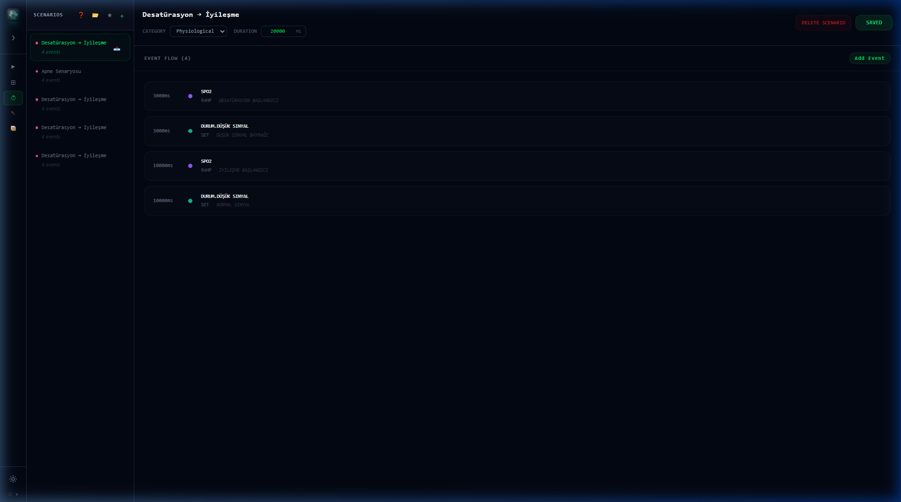
A comprehensive catalog of industrial and medical sensor protocols ready for use.
Native support for YS2000A, Berry BM1000, and generic Patient Monitors.
Templates for environmental sensors, pumps, and custom industrial controllers.
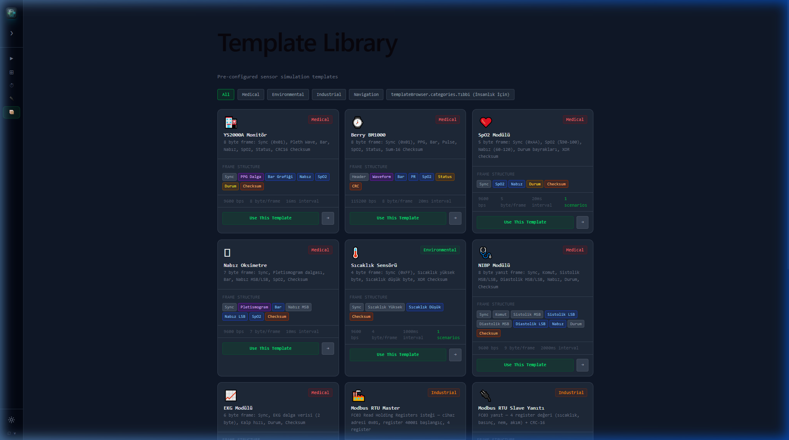
Deterministic failure injection to ensure firmware resilience under worst-case conditions.
Inject Checksum, Sync, Skip Byte, Extra Byte, and Delay errors on demand.
Add Gaussian noise and timing jitter to simulate cable degradation.
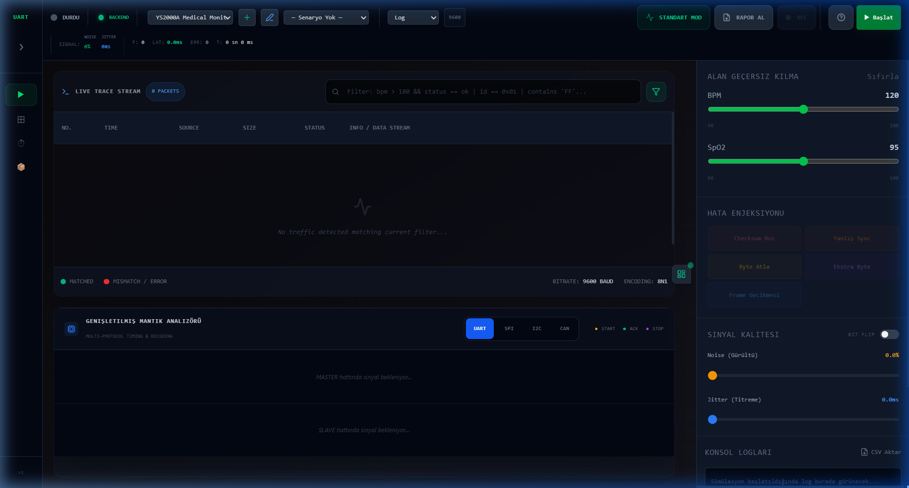
Record any session as a JSON dataset and replay it with bit-perfect accuracy.
Reproduce intermittent hardware bugs by replaying exactly what was sent.
Export recorded traces for team collaboration and remote debugging.
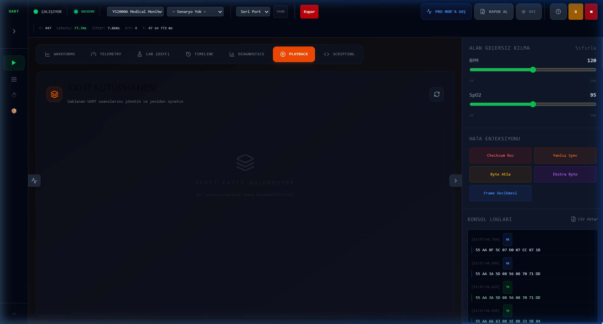
High-level binary parsing and protocol decoding for complex medical frames.
Visualizing every byte of the UART packet with human-readable labels.
Instant color-coded validation of field values against expected ranges.
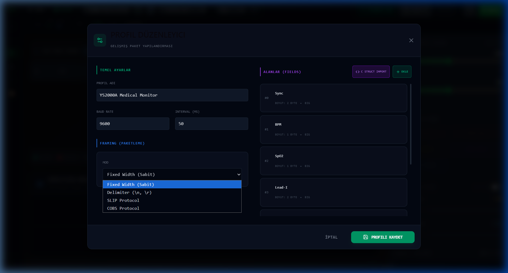
Tauri v2 + Rust implementation for memory-safe, ultra-low latency serial I/O.
Multithreaded DSP offloading ensures 60 FPS UI stability under 10k PPS load.
Pre-optimized signal calculation models for millisecond-accurate simulation.
100% Complete. 100% Deterministic. The Ultimate Tool for the Next Generation of Medical Hardware.